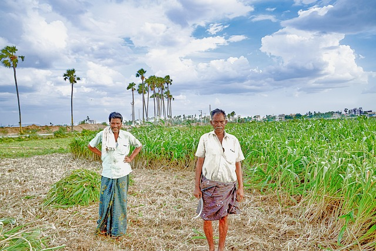
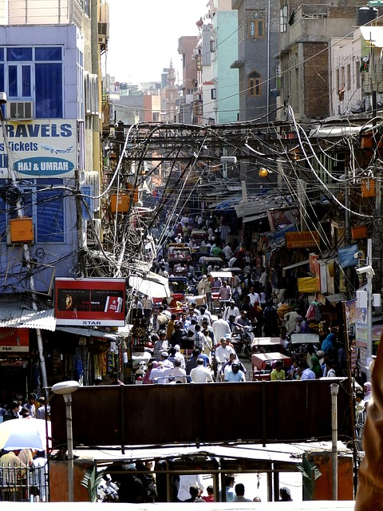

Visualización de Evolución
La digitalización de India no empezó con Internet, sino con la llegada de la electricidad. Una vez conectados los hogares a la energía, el salto hacia la tecnología se acelera.
A medida que India crece, millones de personas salen de la pobreza extrema. El progreso económico no ha sido solo un número, también ha cambiado las condiciones de vida.
Durante décadas, India ha crecido con fuerza. Hoy el crecimiento continúa, pero más moderado: el país entra en una etapa demográfica más estable.
Tendencia y previsión: más conectividad, menos pobreza. India se digitaliza mientras mejora progresivamente sus condiciones de vida.
Apertura y Telefonia Móvil
Reformas del gobierno mejoran el PIB e inicio de la telefonía móvil en 1995, comienza el desarrollo en comunicaciones.

Red Eléctrica
Plan Eléctrico de 2005. Electrificación rural masiva, se eleva la cobertura del 50% al 75% aprox.
🌐 Fuente Consultada
Revolución 4G
Jio rebaja sus tarifas de internet en 2016. La adopción móvil se dispara del 20% al 55% a nivel nacional.
🌐 Fuente Consultada
Líder Poblacional
India supera a China en población en 2023. Todo y así, su crecimiento anual cae a 0.79%: inicio de estabilización demográfica.
🌐 Fuente ConsultadaFuturo 2035
Modelado predictivo de regresión. Estimación sobre la cobertura universal de internet móvil y tecnologia.